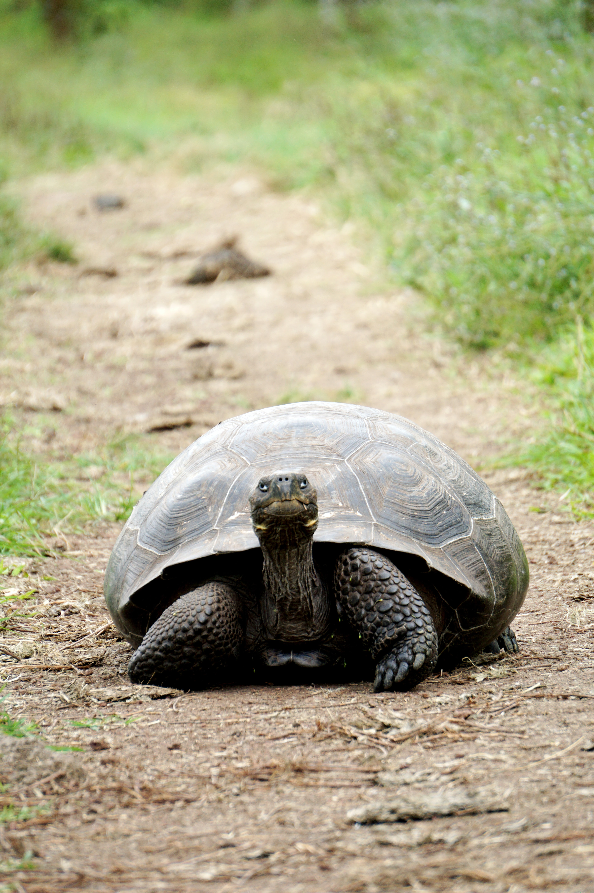
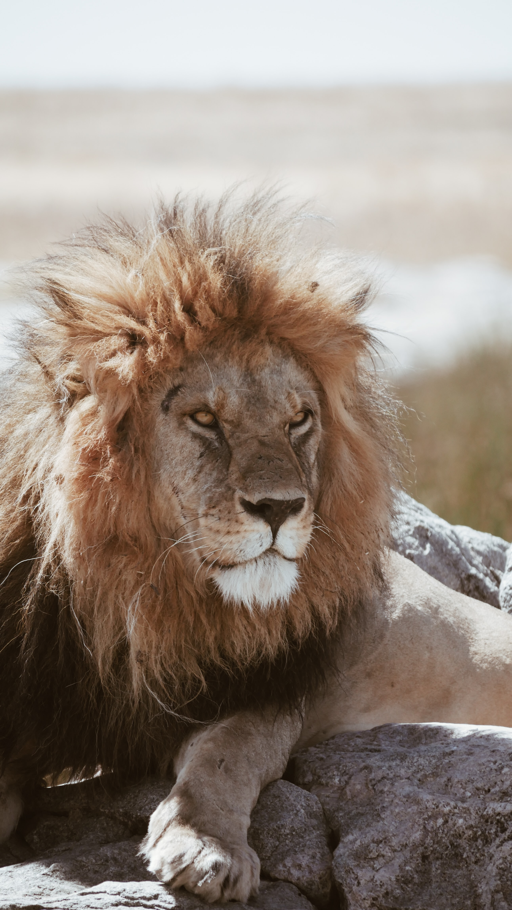
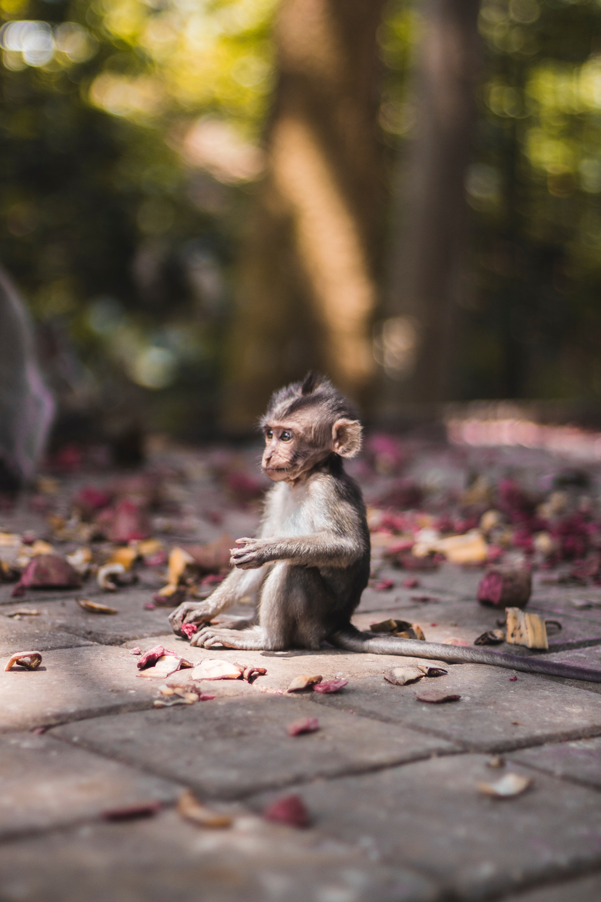
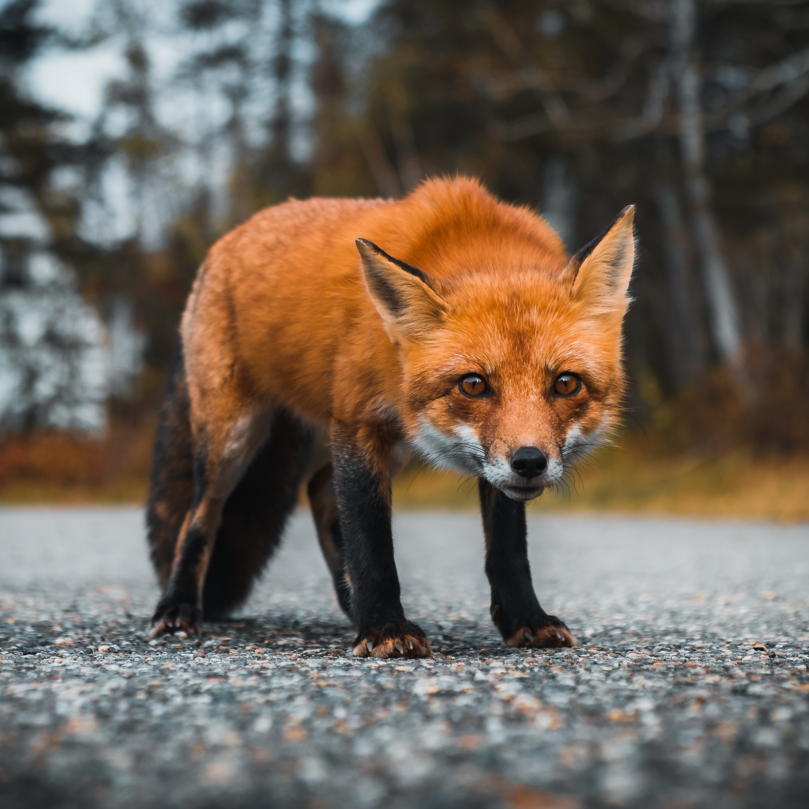
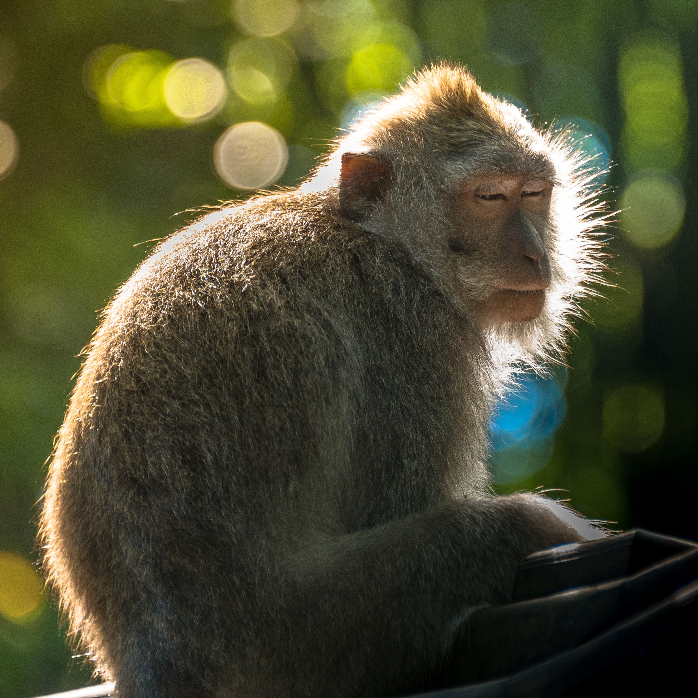
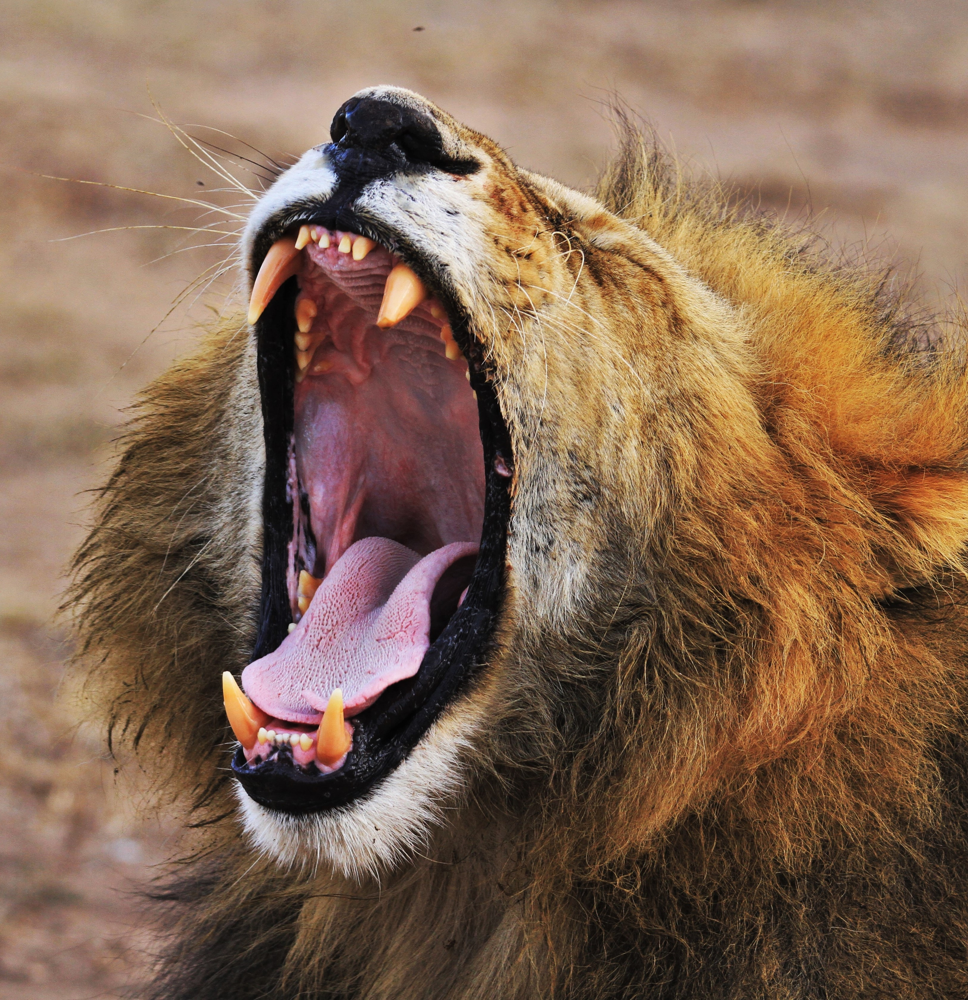
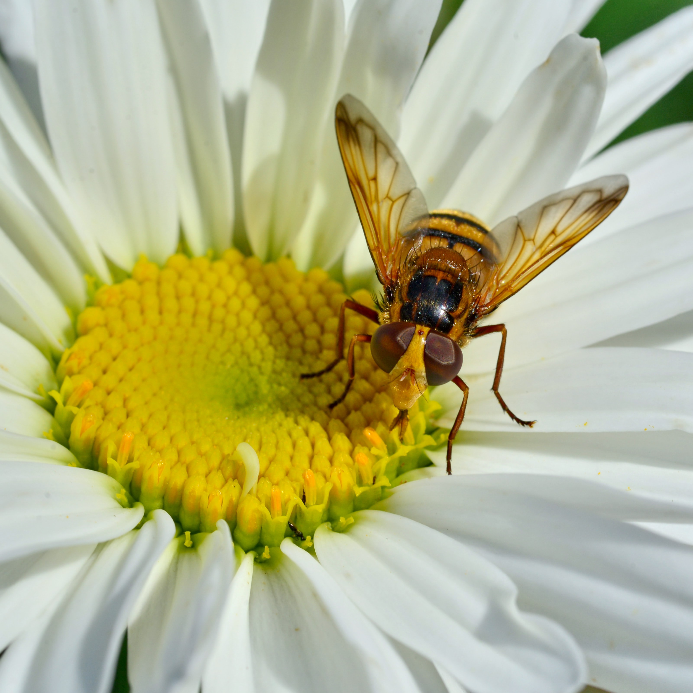

Animais Fantásticos
-

-

-

- 
- 
- 
Tigre
O tigre é um mamífero carnívoro da família dos felídeos, que habita o continente asiático.Dentre suas subespécies é o maior entre todos os felinos selvagens do mundo.São animais extremamente territoriais e solitários. Classificado como um Superpredador, o tigre é o terceiro maior carnívoro terrestre, atrás apenas do Urso-polar e do Urso-de-Kodiak.
É o felino com maior variação de tamanho do mundo entre subespécies, com o tigre-siberiano alcançando até 310 kg enquanto o tigre-de-bali alcançava no máximo 100 kg; tamanho comparável a suçuaranas e leopardos. Algumas estimativas sugerem que existem menos de 2500 indivíduos reprodutores maduros, com nenhuma subpopulação com mais de 250 indivíduos reprodutores maduros. A população era estimada em 100.000 indivíduos no início do século XX. Em tempos atuais, entretanto, apenas cerca de 4.000 indivíduos sobrevivem, uma queda de 97%.
Tigres já foram encontrados da Turquia a Sibéria e da ilha de Java a Índia. Hoje em dia estão restritos principalmente a algumas regiões do Sudeste Asiático, Sibéria e Índia. Três das subespécies estão extintas: o tigre-do-cáspio (encontrado em certas regiões da antiga União Soviética, Turquia, Oriente Médio, Afeganistão e Mongólia), tigre-de-java (encontrado em Java) e tigre-de-bali (que era encontrado apenas em Bali).
É um dos animais mais carismáticos do mundo, sendo símbolo da conservação da natureza e um dos animais mais populares. É o animal símbolo de diversos países da Ásia e mascote de diversas empresas em todo o mundo.
Gato
O gato , também conhecido como gato caseiro, gato urbano ou gato doméstico, é um mamífero carnívoro da família dos felídeos, muito popular como animal de estimação. Ocupando o topo da cadeia alimentar, é predador natural de diversos animais, como roedores, pássaros, lagartixas e alguns insetos. Segundo pesquisas realizadas por instituições norte-americanas, os gatos consistem no segundo animal de estimação mais popular do mundo, estando numericamente atrás apenas dos peixes de aquário.
A primeira associação dos gatos com os humanos da qual se tem evidência ocorreu há cerca de 9 500 anos,[7][8] período mais antigo ao estimado anteriormente, que oscilava entre 3 500 e 8 000 anos. A subfamília Felinae, que agrupa os gatos domésticos, surgiu há cerca de 12 milhões de anos, expandindo-se a partir da África subsariana até alcançar as terras do atual Egito.[9] Acredita-se que o gato-selvagem-africano (Felis silvestris lybica) era seu antepassado imediato.[10] Adicionalmente, evidências genéticas assinalam que os gatos domésticos atuais partilham uma procedência direta com os gatos selvagens do Oriente Médio.
Existem cerca de 250 raças de gato doméstico, cujo peso variável entre 2,5 a 12 kg coloca a espécie na categoria de animal doméstico de pequeno a médio porte. Assim como ocorre com algumas raças de cães que apresentam esta mesma faixa de peso, o gato doméstico pode viver entre quinze e vinte anos[11]. Dados censitários apontam que nos Estados Unidos existem mais gatos domésticos do que cachorros. Estimativas recentes indicam que, em breve, o Brasil irá mostrar essa mesma característica, passando a deter maior população felina do que canina em suas residências.
Devido à sua personalidade independente, tornou-se um animal de companhia em diversos lares ao redor do mundo, agradando pessoas dos mais variados estilos de vida. Na cultura humana, figura da mitologia às superstições, passando por personagens de desenhos animados, tiras de jornais, filmes e contos de fadas. Entre suas mais conhecidas representações, estão os gatos: Tom, Frajola, Manda-Chuva, Gato Félix, Gaturro, O Gato de Botas e Garfield.
Cão
O cão ,no Brasil também chamado de cachorro, é um mamífero carnívoro da família dos canídeos, subespécie do lobo, e talvez o mais antigo animal domesticado pelo ser humano. Teorias postulam que surgiu do lobo cinzento no continente asiático há mais de 100 000 anos. Ao longo dos séculos, através da domesticação, o ser humano realizou uma seleção artificial dos cães por suas aptidões, características físicas ou tipos de comportamento. O resultado foi uma grande diversidade de raças caninas, as quais variam em pelagem e tamanho dentro de suas próprias raças, atualmente classificadas em diferentes grupos ou categorias. As designações vira-lata (no Brasil) ou rafeiro (em Portugal) são dadas aos cães sem raça definida ou mestiços descendentes.
Com expectativa de vida que varia entre dez e vinte anos, o cão é um animal social que, na maioria das vezes, aceita o seu dono como o "chefe da matilha" e possui várias características que o tornam de grande utilidade para o homem. Possui excelente olfato e audição, é bom caçador e corredor vigoroso, relativamente dócil e leal, inteligente e com boa capacidade de aprendizagem. Deste modo, o cão pode ser adestrado para executar um grande número de tarefas úteis, como um cão de caça, de guarda ou pastor de rebanhos, por exemplo. Assim como o ser humano, também é vítima de doenças como o resfriado, a depressão e o mal de Alzheimer, bem como das características do envelhecimento, como problemas de visão e audição, artrite e mudanças de humor.
A afeição e a companhia deste animal são alguns dos motivos da famosa frase: "O cão é o melhor amigo do homem", já que não há registro de amizade tão forte e duradoura entre espécies distintas quanto a de humano e cão. Esta relação figura em filmes, livros e revistas, que citam, inclusive, diferentes relatos reais de diferentes épocas e em várias nações. Entre os cães mais famosos que viveram e marcaram sociedades estão Balto, Laika e Hachiko. Na mitologia, o Cérbero é dito um dos mais assustadores seres. No cinema, Lassie é um dos mais difundidos nomes e, na animação, Pluto, Snoopy e Scooby-Doo há décadas fazem parte da infância de várias gerações.
Tartaruga
Testudinata é um grupo de Diapsida caracterizado pela presença de um casco, cuja parte dorsal é chamada de carapaça (fundido às costelas achatadas e a coluna vertebral) e a parte ventral é chamada de plastrão (fundido às clavículas e à interclavícula). Sem sobreposição de posição e número, acima das placas dérmicas há placas epidérmicas queratinizadas. Além disso, a condição anapsida do crânio é decorrente da perda secundária de fenestras temporais de uma condição ancestral diapsida, não sendo considerados mais como parte do grupo Anapsida. Testudinata têm um bico córneo sem dentes e são o único grupo de Tetrapoda com cinturas internas à caixa torácica. Todos são ovíparos.
Existem 14 famílias que somam em torno de 356 espécies, ocorrendo em regiões tropicais e temperadas do globo, sendo algumas delas ameaçadas de extinção. Os termos populares cágado (água doce), jabuti (terrestres) e tartarugas (marinhas) não refletem classificação taxonômica. A ordem dos Testudines estão divididas filogeneticamente em dois grandes grupos: Cryptodira (retração do pescoço anteroposterior) e Pleurodira (retração do pescoço lateral). A posição filogenética dentre os Amniota permanece um enigma, sendo considerados por alguns autores como próximos de lepidossauros (evidenciado por dados morfológicos) ou arcossauros (evidenciado por dados moleculares).
Leão
O leão é uma espécie de mamífero carnívoro do gênero Panthera e da família Felidae. A espécie é atualmente encontrada na África subsaariana e na Ásia, com uma única população remanescente em perigo, no Parque Nacional da Floresta de Gir, Gujarat, Índia. Foi extinto na África do Norte e no Sudoeste Asiático em tempos históricos, e até o Pleistoceno Superior, há cerca de 10 000 anos, era o mais difundido grande mamífero terrestre depois dos humanos, sendo encontrado na maior parte da África, em muito da Eurásia, da Europa Ocidental à Índia, e na América, do Yukon ao México. É uma dos quatro grandes felinos, com alguns machos excedendo 250 quilogramas em peso, sendo o segundo maior felino recente depois do tigre.
A pelagem é unicolor de coloração castanha, e os machos apresentam uma juba característica. Uma das características mais marcantes da espécie é a presença de um tufo de pelos pretos na cauda, que também possui uma espora. Habita preferencialmente as savanas e pastagens abertas, mas pode ser encontrado em regiões mais arbustivas. É um animal sociável que vive em grupos que consiste das leoas e suas crias, o macho dominante e alguns machos jovens que ainda não alcançaram a maturidade sexual. A dieta consiste principalmente de grandes ungulados e possuem hábitos noturnos e crepusculares, descansando e dormindo na maior parte do dia. Leões vivem por volta de 10-14 anos na natureza, enquanto em cativeiro eles podem viver por até 30 anos. Alguns animais desenvolveram o hábito de atacar e devorar humanos, ficando conhecidos como "devoradores de homens".
A espécie está classificada como "vulnerável" pela União Internacional para a Conservação da Natureza e dos Recursos Naturais (IUCN), e sofreu um declínio populacional de 30-50% nas últimas duas décadas no território africano. Na Ásia, o leão está confinado a uma única área protegida e sua população é estável, mas está classificado como "em perigo", já que a população não passa de 350 animais. Entre as ameaças, a perda de habitat e os conflitos com humanos são as principais razões de preocupação na sua conservação. Por centenas de anos, o leão tem sido usado como símbolo de bravura e nobreza em diversas civilizações e culturas da Europa, Ásia e África. Está amplamente representado em esculturas, pinturas, bandeiras nacionais, brasões, e em filmes e na literatura contemporâneos.
Lagarto
Os lagartos, como os demais répteis, são animais que apresentam corpo coberto por escamas, 4 membros e cauda. Eles fazem parte da ordem dos Escamados juntamente com as serpentes. São ovíparos mas alguns são onívoros, como o Teiú. Apresentam grande variação de tamanho desde poucos centímetros até mais de 1 metro da cabeça à ponta da cauda. Existem mais de 3 mil espécies de lagartos, distribuídos em 45 famílias. Dentre os lagartos mais conhecidos, podemos destacar as iguanas, camaleões e lagartixas.
Os lagartos são animais de sangue frio. Por isso, a maioria deles procura lugares quentes para viver. Muitas espécies habitam regiões tropicais úmidas ou desertos secos. Os lagartos vivem debaixo da terra, sobre o chão ou em árvores e plantas. Algumas espécies passam parte do tempo na água.
Os lagartos variam mais de tamanho e de forma que qualquer outro grupo de répteis. Alguns medem apenas alguns centímetros. Mas o maior lagarto de todos, o dragão-de-komodo, pode chegar a 3 metros de comprimento. A maioria dos lagartos possui quatro pernas fortes, mas alguns não têm pernas. Assim, ficam parecidos com cobras ou serpentes e frequentemente são confundidos com elas. Porém, eles possuem pálpebras e aberturas auriculares, isto é, ouvidos. Geralmente também têm a cauda longa.
Faq
- Qual a idade dos animais?
- As raposas são animais mamíferos e onívoros pertencentes à família Canidae. São vulpídeos de porte médio, caracterizados por um focinho comprido e uma cauda longa e peluda.
- Eles são fantásticos?
- Também apresentam como particularidade suas pupilas ovais, semelhantes às pupilas verticais dos felídeos.
- Qual a diferença?
- As raposas são animais mamíferos e onívoros pertencentes à família Canidae. São vulpídeos de porte médio, caracterizados por um focinho comprido e uma cauda longa e peluda.
- Como proteger?
- Também apresentam como particularidade suas pupilas ovais, semelhantes às pupilas verticais dos felídeos.
- 
- 
- 

- 
Números
Contato
- contato@origamid.com
- +55 (21) 9999-9999
- Rua do Conde, nº 21
- Rio de Janeiro - RJ
- Doe 0 BTC para nos ajudar
- Seg à Sex das 8 às 18